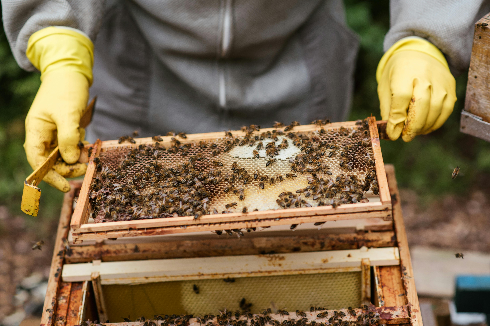

Objetivo
Atrair as abelhas jataí para a caixa e acompanhar
o processo da produção e no final colher o mel.
Com uma possível vendo no final do processo.
Metódo e procedimento
Ultilizaremos um caixa de abelha que contém base,
ninho, sobre ninho, 2 mangueiras, e a tampa.
Dentro da base usaremos cera e abelha e algum
atrativo, como própolis, para atrair as abelhas.
Com isso a abelha na 2 camada vai começar a reprouzir.
Resultado
Referente a essas semanas de pesquisas e acompanhamento das
abelhas chegamos ao resultado em que o mel levou tantos dias,
as abelhas fizeram tal processo. Como consequẽncia, tivemos
tal dificuldade, mas as abelhas no fim reproduziram o mel ou não.
Conclusão
Durante o processo tivemos certa dificuldade com a temperatura
do ambiente e com o manejo devido a falta de costume.
Após o 30 dias observamos uma pequena quantidade de mel que foi produzida.
Uma observação a ser feita é que essa produção foi após as abelhas já
se acotumarem ao habitat, proceso que levou em torno de 45 dias no total.